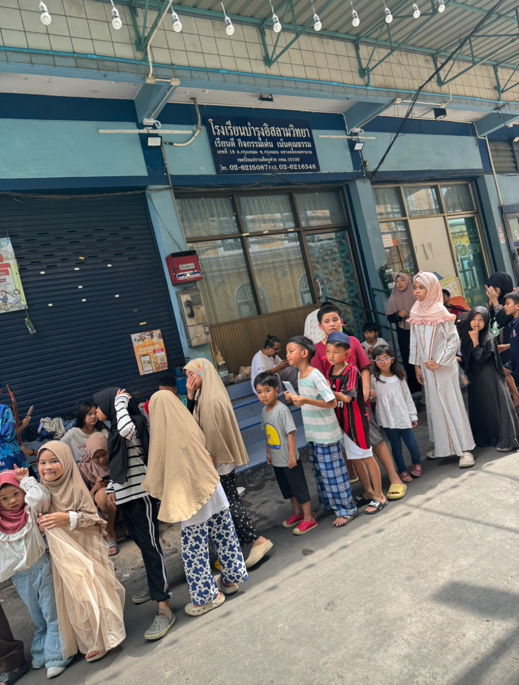

Code
# Ensure required Python packages are available to reticulate
reticulate::py_require(c('chatlas', 'keyring', 'google-genai', 'Pillow'))chatlas is a Python package that provides a simple and unified interface for interacting with various large language model (LLM) providers. This allows you to switch between different models and providers with minimal code changes, streamlining your workflow.
This document demonstrates how to use chatlas to connect to Google’s Gemini models, perform text generation, and analyze images.
First, you need to install the necessary Python packages.
Here’s how to set up and use a Google Gemini model with chatlas.
# Import the ChatGoogle class
from chatlas import ChatGoogle
# Initialize the chat model
chat_google_model = ChatGoogle(
model="gemini-1.5-flash",
api_key=keyring.get_password("system", "google_ai_api_key")
# You can also set a system prompt to guide the model's behavior
#, system_prompt="You are an IT expert"
)
chat_google_modelYou can count the number of tokens in a given text before sending it to the model. This is useful for managing costs and staying within model limits.
Now, let’s generate a response from the model.
chatlas offers interactive modes for a more conversational experience.
You can launch a web-based chat application.
Alternatively, you can chat with the model directly in your console.
chatlas also supports multi-modal models that can analyze images.

chatlas also supports more advanced features like structured output and tool calling, which allow for more complex and powerful applications.
chatlas simplifies the process of working with large language models in Python by providing a consistent and easy-to-use interface. Whether you’re performing simple text generation, analyzing images, or building complex applications with structured data, chatlas is a valuable tool for any data scientist or developer working with LLMs.
---
title: "Chatlas: A Unified LLM Interface for Python"
execute:
warning: false
error: false
eval: false
format:
html:
toc: true
toc-location: right
code-fold: show
code-tools: true
number-sections: true
code-block-bg: true
code-block-border-left: "#31BAE9"
---
# Introduction to Chatlas
`chatlas` is a Python package that provides a simple and unified interface for interacting with various large language model (LLM) providers. This allows you to switch between different models and providers with minimal code changes, streamlining your workflow.
This document demonstrates how to use `chatlas` to connect to Google's Gemini models, perform text generation, and analyze images.
{width="420"}
# Setup
First, you need to install the necessary Python packages.
```{r}
# Ensure required Python packages are available to reticulate
reticulate::py_require(c('chatlas', 'keyring', 'google-genai', 'Pillow'))
```
```{python}
#| eval: false
# Install the chatlas package and its dependencies
pip3 install -U chatlas
pip3 install -q -U google-genai
pip3 install shiny
pip3 install keyring
```
```{python}
# Import necessary classes and functions
from chatlas import ChatGoogle, token_usage, content_image_file
import keyring
```
# Using Google Gemini
Here’s how to set up and use a Google Gemini model with `chatlas`.
```{python}
# Import the ChatGoogle class
from chatlas import ChatGoogle
# Initialize the chat model
chat_google_model = ChatGoogle(
model="gemini-1.5-flash",
api_key=keyring.get_password("system", "google_ai_api_key")
# You can also set a system prompt to guide the model's behavior
#, system_prompt="You are an IT expert"
)
chat_google_model
```
## Token Counting
You can count the number of tokens in a given text before sending it to the model. This is useful for managing costs and staying within model limits.
```{python}
# Count the tokens in a prompt
chat_google_model.token_count("What preceding languages most influenced Python?")
```
## Text Generation
Now, let's generate a response from the model.
```{python}
# Send a prompt to the model and get a response
result = chat_google_model.chat("What preceding languages most influenced Python?")
result
```
# Interactive Modes
`chatlas` offers interactive modes for a more conversational experience.
## Web Application
You can launch a web-based chat application.
```{python}
#| eval: false
# Launch the interactive web app
chat_google_model.app()
```
## Console Mode
Alternatively, you can chat with the model directly in your console.
```{python}
#| eval: false
# Start an interactive console session
chat_google_model.console()
```
# Vision Capabilities
`chatlas` also supports multi-modal models that can analyze images.

```{python}
# Analyze an image and describe what you see
chat_google_model.chat(
"What do you see in this image?",
content_image_file("images/IMG_0220.jpg")
)
```
# Advanced Features
`chatlas` also supports more advanced features like structured output and tool calling, which allow for more complex and powerful applications.
# Conclusion
`chatlas` simplifies the process of working with large language models in Python by providing a consistent and easy-to-use interface. Whether you're performing simple text generation, analyzing images, or building complex applications with structured data, `chatlas` is a valuable tool for any data scientist or developer working with LLMs.
# Reference
- [Chatlas Documentation](https://posit-dev.github.io/chatlas/)